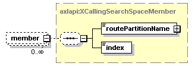

| diagram |  |
||
| namespace | http://www.cisco.com/AXL/API/10.5 | ||
| children | description members partitionUsage name | ||
| used by |
|
||
| source | <xsd:complexType name="XCss"> <xsd:sequence minOccurs="0"> <xsd:element name="description" type="axlapi:String50" nillable="false" minOccurs="0" maxOccurs="1"/> <xsd:element name="members" minOccurs="0" maxOccurs="1"> <xsd:complexType> <xsd:complexContent> <xsd:extension base="axlapi:XCommonMembersExtension"> <xsd:sequence minOccurs="0"> <xsd:element name="member" type="axlapi:XCallingSearchSpaceMember" minOccurs="0" maxOccurs="unbounded"/> </xsd:sequence> </xsd:extension> </xsd:complexContent> </xsd:complexType> </xsd:element> <xsd:element name="partitionUsage" type="axlapi:XPartitionUsage" default="General" nillable="false" minOccurs="0" maxOccurs="1"/> <xsd:element name="name" type="axlapi:UniqueString50" nillable="false" minOccurs="1" maxOccurs="1"/> </xsd:sequence> </xsd:complexType> |
element XCss/description
| diagram | |||||||||
| type | axlapi:String50 | ||||||||
| properties |
|
||||||||
| facets |
|
||||||||
| source | <xsd:element name="description" type="axlapi:String50" nillable="false" minOccurs="0" maxOccurs="1"/> |
element XCss/members
| diagram | |||||||
| type | extension of axlapi:XCommonMembersExtension | ||||||
| properties |
|
||||||
| children | member | ||||||
| source | <xsd:element name="members" minOccurs="0" maxOccurs="1"> <xsd:complexType> <xsd:complexContent> <xsd:extension base="axlapi:XCommonMembersExtension"> <xsd:sequence minOccurs="0"> <xsd:element name="member" type="axlapi:XCallingSearchSpaceMember" minOccurs="0" maxOccurs="unbounded"/> </xsd:sequence> </xsd:extension> </xsd:complexContent> </xsd:complexType> </xsd:element> |
element XCss/members/member
| diagram |  | ||||||
| type | axlapi:XCallingSearchSpaceMember | ||||||
| properties |
|
||||||
| children | routePartitionName index | ||||||
| source | <xsd:element name="member" type="axlapi:XCallingSearchSpaceMember" minOccurs="0" maxOccurs="unbounded"/> |
element XCss/partitionUsage
| diagram |  |
||||||||||
| type | axlapi:XPartitionUsage | ||||||||||
| properties |
|
||||||||||
| source | <xsd:element name="partitionUsage" type="axlapi:XPartitionUsage" default="General" nillable="false" minOccurs="0" maxOccurs="1"/> |
element XCss/name
| diagram | |||||||
| type | axlapi:UniqueString50 | ||||||
| properties |
|
||||||
| facets |
|
||||||
| source | <xsd:element name="name" type="axlapi:UniqueString50" nillable="false" minOccurs="1" maxOccurs="1"/> |
XML Schema documentation generated by XMLSpy Schema Editor http://www.altova.com/xmlspy